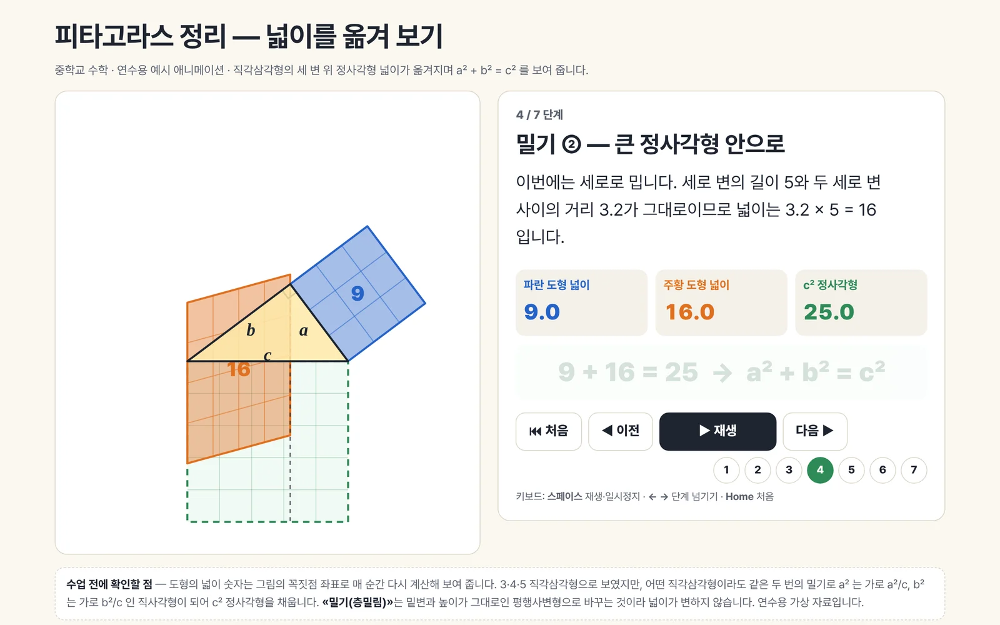
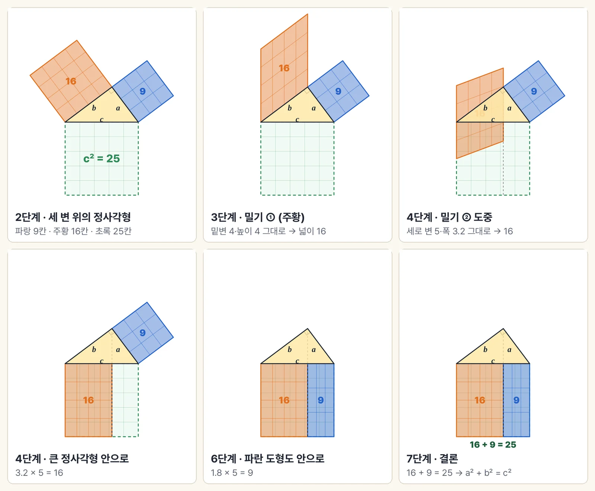

모션으로 개념 애니메이션
단계마다 도형이 움직이며 개념이 드러나는 애니메이션을 한 파일짜리 웹페이지로 만들어 수업에서 바로 띄웁니다. 재생·일시정지·단계 넘기기가 되고, 인터넷 없이 열립니다.
- 목표
- 직각삼각형 세 변 위의 정사각형 넓이가 옮겨지며 a² + b² = c² 가 드러나는 7단계 애니메이션 (예시: 중학교 수학 «피타고라스 정리»)
- 준비물
클로드연수안에 만든 빈13차시폴더- 결과물
index.html한 파일 — 재생·일시정지, 이전·다음 단계, 키보드 조작, 외부 라이브러리·인터넷 없이 열림- 주의
- 도형이 움직이는 동안 넓이가 실제로 같아야 함 · 수학적 정확성은 교사가 마지막으로 확인
개념 애니메이션은 칠판에 그리던 그림을 움직이는 순서로 보여 줍니다. 동영상과 달리 HTML 애니메이션은 교사가 단계마다 멈추고 «다음에는 어떻게 될까?»라고 물은 뒤 넘길 수 있습니다. 핵심은 둘입니다. 장면표(단계마다 무엇이 왜 움직이는지)를 먼저 받는 것, 그리고 움직이는 동안 변하지 말아야 할 값(여기서는 넓이)을 화면에 계산해 보여 주는 것입니다. 그 숫자가 그대로인지 보면 애니메이션이 수학적으로 맞는지 눈으로 확인할 수 있습니다.
먼저 볼 영상
 12:03
먼저 볼 영상클로드 신기능 모션, 이제 스킬이나 편집 프로그램 필요 없습니다 | 사용법 총정리 [모션그래픽]Aiden의 친절한 AI · 유튜브클로드에 새로 나온 «모션» 기능으로 글·데이터·아이디어를 짧은 애니메이션 영상으로 만드는 법을 다룹니다.
12:03
먼저 볼 영상클로드 신기능 모션, 이제 스킬이나 편집 프로그램 필요 없습니다 | 사용법 총정리 [모션그래픽]Aiden의 친절한 AI · 유튜브클로드에 새로 나온 «모션» 기능으로 글·데이터·아이디어를 짧은 애니메이션 영상으로 만드는 법을 다룹니다.
 8:18
먼저 볼 영상Claude Motion 완전 정리: 플랜별 사용법과 Opus 5.5 모션그래픽 제작법업클릭, 디지털노마드 탐구생활 · 유튜브공식 기능 Claude Motion 과 «Opus 5.5 모션그래픽»의 차이, 플랜별 사용법, Claude Code 에 HyperFrames·Remotion 을 붙여 만드는 과정을 다룹니다.
8:18
먼저 볼 영상Claude Motion 완전 정리: 플랜별 사용법과 Opus 5.5 모션그래픽 제작법업클릭, 디지털노마드 탐구생활 · 유튜브공식 기능 Claude Motion 과 «Opus 5.5 모션그래픽»의 차이, 플랜별 사용법, Claude Code 에 HyperFrames·Remotion 을 붙여 만드는 과정을 다룹니다.
두 영상은 클로드의 새 기능 «모션(Claude Motion)»을 소개합니다. 이 차시의 본 실습은 모든 유료 플랜에서 되는 Code 탭으로 하고, 모션은 바로 아래 «새 기능 소개»에 정리했습니다.
새 기능 소개 — 클로드 모션(Claude Motion)
Claude 도움말에 따르면 모션은 글·차트·도형·그림을 움직이는 짧은 애니메이션으로 만들어 주는 기능입니다. 클로드가 프롬프트를 보고 애니메이션을 코드로 짜서 짧은 영상처럼 재생하며, 영상 생성 모델을 쓰지 않으므로 실제 같은 장면이나 사람은 만들지 않습니다. 코드라서 낱말 하나, 숫자 하나, 타이밍 하나만 골라 바꿀 수 있습니다.
- Team 플랜은 처음부터 켜져 있고, Enterprise 플랜은 소유자가 조직 설정 → 아티팩트에서 켜야 합니다.
- 채팅에서 애니메이션을 요청하거나, 메시지 상자에서 출력 → Motion 을 고릅니다. 아티팩트 탭의 Motion 템플릿에서 시작할 수도 있습니다.
- 고칠 점은 채팅으로 말하거나 편집기에서 직접 고치고, 내보내기 → MP4 로 받습니다. 처음에는 나만 보이고 공유를 눌러야 나눠집니다.
- 플랜 사용 한도에 포함되며, 길고 복잡할수록 많이 씁니다.
- 도움말의 모션 안내 대상은 Team·Enterprise 입니다. 개인 플랜은 아래 따라 하기처럼 Code 탭으로 같은 종류의 애니메이션을 만듭니다.
- 결과가 내 폴더의
index.html파일이라 USB로 옮기거나 8차시처럼 인터넷에 올릴 수 있습니다. - MP4 영상이 필요하면 14차시 방법으로 내보냅니다.
중학생에게 교실 TV로 보여 줄 30초 설명 애니메이션을 만들어 줘. 주제는 피타고라스 정리야. 직각삼각형(세 변 3, 4, 5)의 두 짧은 변 위 정사각형 넓이(9와 16)가 빗변 위 정사각형(25)으로 옮겨지며 a² + b² = c² 가 드러나게 해 줘. 장면마다 큰 글자로 짧은 설명을 넣고, 넓이 숫자가 바뀌지 않는다는 것을 강조해 줘.
메뉴 이름은 Claude 도움말 한국어판 문구이며, 앱 화면에서는 다르게 보일 수 있습니다. 화면 문구를 따릅니다. 도움말은 «누가 볼지, 어디서 재생할지, 대략 몇 초인지»를 함께 말하면 결과가 좋아진다고 안내합니다.
1 준비
클로드연수안에 빈 폴더13차시를 만듭니다.- Code 탭을 처음 쓴다면 연수 전 점검의 2번(데스크톱 앱 설치)을 먼저 확인합니다. Code 탭은 따로 설치하지 않습니다.
2 따라 하기
번호 순서대로 진행합니다. 프롬프트가 필요한 단계에는 바로 아래에 복사 단추가 있습니다.
- 데스크톱 앱 사이드바 맨 위의 Code 탭을 누릅니다.
- 프롬프트 상자 아래 줄의 환경 단추에서 Local 묶음의 맨 위 항목(내 컴퓨터)을 고르고, 폴더 단추의 Open folder… 로
클로드연수/13차시를 고릅니다. - 같은 줄의 권한 모드 단추를 Plan 으로 바꿉니다. Plan 모드에서는 파일을 고치지 않고 계획만 나옵니다.
캡처 넣을 곳 · L13-1
Code 탭에서 환경·폴더·권한 모드를 고른 화면 (따라 하기 2~3번).- 번호 표시: ① 환경 Local ② 폴더
13차시③ 권한 모드 Plan
- 번호 표시: ① 환경 Local ② 폴더
- 장면표를 받습니다. 아래 프롬프트를 보내고 장면표를 읽습니다. 고칠 점은 말로 고칩니다. 예: «3단계 설명을 더 짧게, 마지막 단계에 생각해 볼 질문 하나»
중학교 수학 '피타고라스 정리' 수업에서 띄울 개념 애니메이션을 만들려고 합니다. 먼저 계획만 세워 주세요. 요구 사항 - index.html 한 파일. 외부 라이브러리·글꼴·인터넷 없이 열려야 함 (SVG와 자바스크립트로) - 직각삼각형 a = 3, b = 4, c = 5 와 세 변 위의 정사각형 (넓이를 셀 수 있게 칸을 그리기) - 두 짧은 변 위의 정사각형이 넓이를 유지한 채 밀려서(층밀림) 빗변 위 정사각형 안으로 옮겨지며 a² + b² = c² 가 드러나게 - 7단계 안팎으로 나누고, 단계마다 제목과 설명 한두 문장 - 재생·일시정지, 이전·다음 단계, 처음으로 단추와 단계 번호 - 움직이는 동안 두 도형의 넓이를 꼭짓점 좌표로 계산해 화면에 숫자로 보여 주기 - 교실 TV에서 읽히는 큰 글자, 키보드 조작(스페이스·화살표) - 컴퓨터에서 '움직임 줄이기'를 켜 두었으면 움직임 없이 단계만 바뀌게 계획은 장면표로 보여 주세요: 단계 | 화면에서 움직이는 것 | 넓이가 그대로인 까닭 | 화면 설명 문장 그리고 도형의 꼭짓점 좌표를 어떻게 정하고 옮기는지, 다 만든 뒤 확인할 방법을 적어 주세요.
«넓이가 그대로인 까닭» 열이 이 차시의 핵심입니다. 단계마다 이유를 말로 적게 하면 만들기 전에 수학 설명이 맞는지 교사가 먼저 볼 수 있습니다(예: «밑변과 높이가 같은 평행사변형이므로»). «넓이를 계산해 숫자로»는 애니메이션이 정말 넓이를 지키는지 화면에서 바로 확인하는 장치입니다. 그림만 그럴듯하고 실제로는 도형이 조금씩 커지는 애니메이션이 의외로 많습니다.
캡처 넣을 곳 · L13-2
Plan 모드의 장면표 (따라 하기 4번).- 빨간 상자: «넓이가 그대로인 까닭» 열
- 권한 모드를 Manual 로 바꾸고 아래 프롬프트로 만들기를 맡깁니다. 파일을 만들기 전에 승인·거절 단추가 나오면 내용을 보고 승인합니다.
계획대로 만들어 주세요. 다 만들면 앱 안 브라우저 창에서 열어 처음부터 끝까지 재생해 보고, 단계마다 화면에 나온 두 도형의 넓이 숫자를 표로 정리해 알려 주세요.
- 대화창에 나온
index.html경로를 누르면 앱 안 브라우저 창에서 열립니다. 재생을 눌러 끝까지 보고, 이전·다음 단추와 ← → 키로 단계를 직접 넘겨 봅니다.캡처 넣을 곳 · L13-3
앱 안 브라우저 창 (따라 하기 6번).- 빨간 상자: 대화창의
index.html경로와 재생 단추
- 빨간 상자: 대화창의
- 아래 프롬프트로 수학 내용을 검수하게 하고, 고칠 점은 하나씩 요청합니다.
수학 내용을 검수해 주세요. 1. 직각삼각형의 세 변이 정말 3, 4, 5 이고 직각 표시가 빗변의 맞은편 꼭짓점에 있는지 (좌표로 계산해 보이기) 2. 도형을 미는 동안 넓이가 9와 16에서 바뀌지 않는지 (움직이는 도중 세 시점에서 계산) 3. 마지막에 두 직사각형이 빗변 위 정사각형을 빈틈도 겹침도 없이 채우는지 4. 3·4·5 에서만 되는 것처럼 보이지 않게, 어떤 직각삼각형에서도 성립한다는 설명이 있는지 5. '층밀림'처럼 학생이 처음 보는 말에 쉬운 설명이 붙어 있는지 틀린 곳은 고치고, 고친 내용을 한 줄씩 알려 주세요.
- 파일 탐색기(맥은 Finder)에서
13차시/index.html을 더블클릭하면 크롬·엣지에서 열립니다. 수업에서는 단계마다 멈추고 «다음에는 어떻게 될까?»를 물은 뒤 넘깁니다.
3 결과 예시


4 검증 포인트
② 빈틈과 겹침 — 마지막 단계에서 두 직사각형이 빗변 위 정사각형을 정확히 채우는지, 경계선이 빗변의 맞은편 꼭짓점에서 내린 선과 같은지 봅니다.
③ 직각의 자리 — 직각 표시가 빗변의 맞은편 꼭짓점에 있는지, 세 변의 이름(a, b, c)이 맞는 변에 붙었는지 봅니다.
④ 일반화 — 3·4·5 에서만 되는 것처럼 보이지 않게 «어떤 직각삼각형에서도»라는 설명이 있는지 봅니다.
⑤ 설명 문장 — «층밀림»처럼 교과서에 없는 말은 쉬운 설명이 붙었는지, 설명이 학생 수준인지 교사가 읽어 봅니다.
⑥ 조작 — 재생 중 일시정지가 그 자리에서 멈추는지, Tab 으로 단추에 갈 수 있는지, 스페이스·화살표 키가 되는지 봅니다.
⑦ 교실 화면 — 교실 TV에 띄워 뒷자리에서 숫자와 설명이 읽히는지, 인터넷을 끄고도 열리는지 봅니다.
5 다른 교과에 적용하기
따라 하기 4단계 프롬프트 대신 아래 교과 프롬프트를 씁니다. 교과마다 «다 만든 뒤 확인할 것»을 넣어 두었으니, 5단계와 7단계는 아래 공통 프롬프트로 바꿔 씁니다. 자료가 필요한 사례는 교사가 확인한 자료 파일을 폴더에 함께 넣어 줍니다. 교과를 눌러 펼친 뒤 복사합니다.
계획대로 만들어 주세요. 다 만들면 앱 안 브라우저 창에서 열어 처음부터 끝까지 재생해 보고, 계획의 «다 만든 뒤 확인할 것»을 하나씩 점검한 결과를 표로 알려 주세요.
내용을 검수해 주세요. 1. 계획의 «다 만든 뒤 확인할 것»을 다시 하나씩 점검 2. 움직이는 동안 바뀌면 안 되는 값(개수·길이·넓이 등)이 정말 그대로인지 3. 교과서 용어와 다른 표현, 학생이 오해할 만한 그림이나 움직임이 있는지 틀린 곳은 고치고, 고친 내용을 한 줄씩 알려 주세요.
수학원의 넓이부채꼴 조각을 엇갈려 붙이면 직사각형에 가까워짐
중학교 수학 '원의 넓이' 수업에서 띄울 개념 애니메이션을 만들려고 합니다. 먼저 계획만 세워 주세요. 요구 사항 - index.html 한 파일. 외부 라이브러리·글꼴·인터넷 없이 열려야 함 - 반지름 r 인 원을 부채꼴 8조각 → 16조각 → 32조각으로 나누어 위아래 엇갈려 붙이는 장면 - 조각이 많아질수록 가로가 원둘레의 절반(πr), 세로가 반지름 r 인 직사각형에 가까워져 넓이가 πr² 임을 보여 주기 - 원둘레에 칠한 색을 붙인 도형의 위·아래 변에도 같은 색으로 이어 보이기 - 단계마다 제목과 설명 한두 문장 - 재생·일시정지, 이전·다음 단계, 처음으로 단추와 단계 번호 - 교실 TV에서 읽히는 큰 글자, 키보드 조작, '움직임 줄이기' 설정을 켠 컴퓨터에서는 움직임 없이 단계만 바뀌게 다 만든 뒤 확인할 것 - 조각을 옮기는 동안 조각의 모양과 크기가 바뀌지 않는지 - 붙인 도형의 가로가 πr, 세로가 r 로 표시되는지 - 조각 수가 늘어도 전체 넓이는 원의 넓이와 같다고 설명하는지 계획은 장면표로 보여 주세요: 단계 | 화면에서 움직이는 것 | 그렇게 움직이는 까닭 | 화면 설명 문장
수학일차방정식의 풀이저울 양쪽에 같은 것을 더하고 빼며 x 구하기
중학교 수학 '일차방정식의 풀이' 수업에서 띄울 개념 애니메이션을 만들려고 합니다. 먼저 계획만 세워 주세요. 요구 사항 - index.html 한 파일. 외부 라이브러리·글꼴·인터넷 없이 열려야 함 - 저울 왼쪽에 x 상자 2개와 추 3개, 오른쪽에 추 11개를 올린 그림 (2x + 3 = 11) - 양쪽에서 추 3개를 함께 내리고, 양쪽을 똑같이 둘로 나누어 x = 4 를 구하는 장면 - 장면마다 저울 옆에 식이 함께 바뀌어 표시 - 단계마다 제목과 설명 한두 문장 - 재생·일시정지, 이전·다음 단계, 처음으로 단추와 단계 번호 - 교실 TV에서 읽히는 큰 글자, 키보드 조작, '움직임 줄이기' 설정을 켠 컴퓨터에서는 움직임 없이 단계만 바뀌게 다 만든 뒤 확인할 것 - 장면마다 저울이 수평인지 (양쪽 무게가 같은지) - 식이 2x + 3 = 11 → 2x = 8 → x = 4 로 바뀌는지 - 한쪽에서만 빼거나 나누는 장면이 없는지 계획은 장면표로 보여 주세요: 단계 | 화면에서 움직이는 것 | 그렇게 움직이는 까닭 | 화면 설명 문장
과학물질의 상태 변화고체·액체·기체의 입자 배열과 움직임
중학교 과학 '물질의 상태 변화와 입자 배열' 수업에서 띄울 개념 애니메이션을 만들려고 합니다. 먼저 계획만 세워 주세요. 요구 사항 - index.html 한 파일. 외부 라이브러리·글꼴·인터넷 없이 열려야 함 - 같은 입자 30개로 고체 → 액체 → 기체 상태를 차례로 보여 주기 (열을 얻으면 입자 운동이 활발해짐) - 고체는 규칙적으로 늘어서 제자리에서 진동, 액체는 배열이 불규칙하고 자리를 옮김, 기체는 멀리 떨어져 빠르게 움직임 - 단계마다 '열을 얻음 / 열을 잃음' 표시 - 단계마다 제목과 설명 한두 문장 - 재생·일시정지, 이전·다음 단계, 처음으로 단추와 단계 번호 - 교실 TV에서 읽히는 큰 글자, 키보드 조작, '움직임 줄이기' 설정을 켠 컴퓨터에서는 움직임 없이 단계만 바뀌게 다 만든 뒤 확인할 것 - 상태가 바뀌어도 입자 수와 입자 하나의 크기가 그대로인지 - 입자 자체가 커지거나 녹는 것처럼 그리지 않았는지 - 기체에서 입자 사이가 가장 멀게 그려졌는지 계획은 장면표로 보여 주세요: 단계 | 화면에서 움직이는 것 | 그렇게 움직이는 까닭 | 화면 설명 문장
과학혈액 순환폐순환과 온몸 순환 경로를 따라 혈액이 이동
중학교 과학 '혈액 순환' 수업에서 띄울 개념 애니메이션을 만들려고 합니다. 먼저 계획만 세워 주세요. 요구 사항 - index.html 한 파일. 외부 라이브러리·글꼴·인터넷 없이 열려야 함 - 심장(2심방 2심실)·폐·온몸을 단순한 그림으로 그리고 혈액을 점으로 움직이기 - 폐순환: 우심실 → 폐동맥 → 폐 → 폐정맥 → 좌심방 - 온몸 순환: 좌심실 → 대동맥 → 온몸 → 대정맥 → 우심방 - 산소가 많은 혈액과 적은 혈액을 색으로 구분하고 색의 뜻을 화면에 밝히기 - 단계마다 제목과 설명 한두 문장 - 재생·일시정지, 이전·다음 단계, 처음으로 단추와 단계 번호 - 교실 TV에서 읽히는 큰 글자, 키보드 조작, '움직임 줄이기' 설정을 켠 컴퓨터에서는 움직임 없이 단계만 바뀌게 다 만든 뒤 확인할 것 - 두 경로의 순서가 위와 같은지 - 폐를 지난 혈액이 산소가 많은 색으로 바뀌는지 - 그림의 심장 왼쪽·오른쪽은 보는 사람이 아니라 몸 기준이라는 설명이 있는지 계획은 장면표로 보여 주세요: 단계 | 화면에서 움직이는 것 | 그렇게 움직이는 까닭 | 화면 설명 문장
국어문장의 짜임홑문장 두 개가 이어진문장·안은문장으로 합쳐짐
중학교 국어 '문장의 짜임' 수업에서 띄울 개념 애니메이션을 만들려고 합니다. 먼저 계획만 세워 주세요. 요구 사항 - index.html 한 파일. 외부 라이브러리·글꼴·인터넷 없이 열려야 함 - 첨부한 예문.txt 의 홑문장 짝을 이어진문장과 안은문장으로 바꾸는 장면 (예문은 파일에 있는 것만) - 주어와 서술어에 색을 칠하고, 합쳐질 때 이어 주는 말(-고, -지만, -아서 등)이나 안긴 부분을 강조 - 단계마다 제목과 설명 한두 문장 - 재생·일시정지, 이전·다음 단계, 처음으로 단추와 단계 번호 - 교실 TV에서 읽히는 큰 글자, 키보드 조작, '움직임 줄이기' 설정을 켠 컴퓨터에서는 움직임 없이 단계만 바뀌게 다 만든 뒤 확인할 것 - 화면의 예문과 결과 문장이 첨부 파일과 같은지 - 주어·서술어 표시가 맞는지, 겹문장에서 주어·서술어 관계가 두 번 이상 나타나는지 계획은 장면표로 보여 주세요: 단계 | 화면에서 움직이는 것 | 그렇게 움직이는 까닭 | 화면 설명 문장
영어의문문 만들기평서문의 낱말 카드가 자리를 옮겨 의문문이 됨
중학교 영어 '의문문 만들기' 수업에서 띄울 개념 애니메이션을 만들려고 합니다. 먼저 계획만 세워 주세요. 요구 사항 - index.html 한 파일. 외부 라이브러리·글꼴·인터넷 없이 열려야 함 - 'She is happy.' → 'Is she happy?' (be동사가 주어 앞으로) - 'You like music.' → 'Do you like music?' (Do 가 문장 앞에 붙음) - 'He plays soccer.' → 'Does he play soccer?' (Does 가 붙고 plays 가 play 로) - 낱말 카드가 자리를 옮기고, 끝에 마침표가 물음표로 바뀌는 애니메이션 - 단계마다 제목과 설명 한두 문장 - 재생·일시정지, 이전·다음 단계, 처음으로 단추와 단계 번호 - 교실 TV에서 읽히는 큰 글자, 키보드 조작, '움직임 줄이기' 설정을 켠 컴퓨터에서는 움직임 없이 단계만 바뀌게 다 만든 뒤 확인할 것 - 세 의문문이 문법에 맞는지 (첫 글자 대문자, 물음표 포함) - Does 뒤의 동사가 원형(play)으로 바뀌는지 계획은 장면표로 보여 주세요: 단계 | 화면에서 움직이는 것 | 그렇게 움직이는 까닭 | 화면 설명 문장
사회수요와 공급수요·공급이 늘면 균형 가격과 거래량이 바뀜
중학교 사회 '수요와 공급의 변화' 수업에서 띄울 개념 애니메이션을 만들려고 합니다. 먼저 계획만 세워 주세요. 요구 사항 - index.html 한 파일. 외부 라이브러리·글꼴·인터넷 없이 열려야 함 - 가격(세로축)·수량(가로축) 그래프에 오른쪽 아래로 내려가는 수요 곡선, 오른쪽 위로 올라가는 공급 곡선과 균형점 - 수요가 늘어 수요 곡선이 오른쪽으로 옮겨지면 균형 가격이 오르고 거래량이 늘어나는 장면 - 공급이 늘어 공급 곡선이 오른쪽으로 옮겨지면 균형 가격이 내리고 거래량이 늘어나는 장면 - 그래프의 숫자는 예시라고 화면에 밝히기 - 단계마다 제목과 설명 한두 문장 - 재생·일시정지, 이전·다음 단계, 처음으로 단추와 단계 번호 - 교실 TV에서 읽히는 큰 글자, 키보드 조작, '움직임 줄이기' 설정을 켠 컴퓨터에서는 움직임 없이 단계만 바뀌게 다 만든 뒤 확인할 것 - 곡선이 옮겨질 때 모양(기울기)이 그대로인지 - 균형점이 두 곡선이 만나는 점에 정확히 찍히는지 - 가격·거래량이 오르고 내리는 결과가 위 설명과 같은지 계획은 장면표로 보여 주세요: 단계 | 화면에서 움직이는 것 | 그렇게 움직이는 까닭 | 화면 설명 문장
역사영역 변화 지도시기별 영역이 바뀌는 지도 (첨부 자료만)
중학교 역사 '시기별 영역 변화' 수업에서 띄울 개념 애니메이션을 만들려고 합니다. 먼저 계획만 세워 주세요. 요구 사항 - index.html 한 파일. 외부 라이브러리·글꼴·인터넷 없이 열려야 함 - 첨부한 시기별 영역 그림(교사가 검토한 자료)을 차례로 겹쳐 보이며 영역이 바뀌는 애니메이션 - 시기마다 연도와 핵심 사건 한 줄 (첨부한 사건목록.csv 에 있는 것만) - 지도는 단순화한 그림이라고 화면에 밝히기 - 단계마다 제목과 설명 한두 문장 - 재생·일시정지, 이전·다음 단계, 처음으로 단추와 단계 번호 - 교실 TV에서 읽히는 큰 글자, 키보드 조작, '움직임 줄이기' 설정을 켠 컴퓨터에서는 움직임 없이 단계만 바뀌게 다 만든 뒤 확인할 것 - 첨부 자료에 없는 영역·사건·연도가 나오지 않는지 - 장면 순서가 연도 순서와 같은지 계획은 장면표로 보여 주세요: 단계 | 화면에서 움직이는 것 | 그렇게 움직이는 까닭 | 화면 설명 문장
도덕도덕적 추론도덕 원리 + 사실 판단 → 도덕 판단
중학교 도덕 '도덕적 추론 과정' 수업에서 띄울 개념 애니메이션을 만들려고 합니다. 먼저 계획만 세워 주세요. 요구 사항 - index.html 한 파일. 외부 라이브러리·글꼴·인터넷 없이 열려야 함 - 도덕 원리, 사실 판단, 도덕 판단 세 상자가 차례로 나타나 하나의 추론으로 이어지는 장면 - 예시 사례 2개는 첨부한 사례.txt 에 있는 것만 - 마지막에 사실 판단이 틀리면 도덕 판단도 틀릴 수 있음을 보여 주는 장면 - 단계마다 제목과 설명 한두 문장 - 재생·일시정지, 이전·다음 단계, 처음으로 단추와 단계 번호 - 교실 TV에서 읽히는 큰 글자, 키보드 조작, '움직임 줄이기' 설정을 켠 컴퓨터에서는 움직임 없이 단계만 바뀌게 다 만든 뒤 확인할 것 - 사실 판단 상자에 '~해야 한다' 같은 당위 문장이 들어가지 않았는지 - 사례 문장이 첨부 파일과 같은지 계획은 장면표로 보여 주세요: 단계 | 화면에서 움직이는 것 | 그렇게 움직이는 까닭 | 화면 설명 문장
기술·가정톱니바퀴의 회전톱니 수에 따라 회전수와 방향이 달라짐
중학교 기술·가정 '톱니바퀴의 운동 전달' 수업에서 띄울 개념 애니메이션을 만들려고 합니다. 먼저 계획만 세워 주세요. 요구 사항 - index.html 한 파일. 외부 라이브러리·글꼴·인터넷 없이 열려야 함 - 톱니 40개짜리와 20개짜리 바퀴가 맞물려 도는 애니메이션 - 큰 바퀴가 1바퀴 돌 때 작은 바퀴는 2바퀴 돌고, 방향은 서로 반대 - 톱니 수를 40/20, 30/15, 20/40 으로 바꾸어 보는 장면 - 단계마다 제목과 설명 한두 문장 - 재생·일시정지, 이전·다음 단계, 처음으로 단추와 단계 번호 - 교실 TV에서 읽히는 큰 글자, 키보드 조작, '움직임 줄이기' 설정을 켠 컴퓨터에서는 움직임 없이 단계만 바뀌게 다 만든 뒤 확인할 것 - 맞물린 두 바퀴의 회전 방향이 반대인지 - 회전수의 비가 톱니 수의 거꾸로 비(40:20 이면 1:2)인지 - 맞물린 톱니가 서로 파고들거나 떨어져 보이지 않는지 계획은 장면표로 보여 주세요: 단계 | 화면에서 움직이는 것 | 그렇게 움직이는 까닭 | 화면 설명 문장
정보이진 탐색1~100 숫자 맞히기, 범위가 반씩 줄어듦
중학교 정보 '이진 탐색' 수업에서 띄울 개념 애니메이션을 만들려고 합니다. 먼저 계획만 세워 주세요. 요구 사항 - index.html 한 파일. 외부 라이브러리·글꼴·인터넷 없이 열려야 함 - 1~100 이 적힌 띠에서 정답 73 을 찾는 과정 (가운데 값과 비교해 절반을 지우기) - 단계마다 비교한 값, 남은 범위, 비교 횟수 표시 - 처음부터 하나씩 찾는 순차 탐색의 비교 횟수와 나란히 비교 - 단계마다 제목과 설명 한두 문장 - 재생·일시정지, 이전·다음 단계, 처음으로 단추와 단계 번호 - 교실 TV에서 읽히는 큰 글자, 키보드 조작, '움직임 줄이기' 설정을 켠 컴퓨터에서는 움직임 없이 단계만 바뀌게 다 만든 뒤 확인할 것 - 남은 범위가 단계마다 절반 가까이로 줄어드는지 - 1~100 에서는 어떤 수든 7번 안에 찾는다는 설명이 맞는지 (2의 7제곱 = 128) - 73 을 찾는 비교 횟수가 화면의 표와 같은지 계획은 장면표로 보여 주세요: 단계 | 화면에서 움직이는 것 | 그렇게 움직이는 까닭 | 화면 설명 문장
음악장음계의 온음과 반음건반 위에서 온음·반음 배열이 드러남
중학교 음악 '장음계의 온음과 반음' 수업에서 띄울 개념 애니메이션을 만들려고 합니다. 먼저 계획만 세워 주세요. 요구 사항 - index.html 한 파일. 외부 라이브러리·글꼴·인터넷 없이 열려야 함 - 피아노 건반 그림에서 다장조 음계 도~높은 도를 차례로 누르며 음 사이 간격 표시 - 온음·온음·반음·온음·온음·온음·반음 배열을 색으로 표시 - 사장조(솔~높은 솔)로 옮기면 파에 올림표를 붙여야 같은 배열이 됨을 보여 주기 - 소리는 음원 파일 없이 브라우저에서 만들기 - 단계마다 제목과 설명 한두 문장 - 재생·일시정지, 이전·다음 단계, 처음으로 단추와 단계 번호 - 교실 TV에서 읽히는 큰 글자, 키보드 조작, '움직임 줄이기' 설정을 켠 컴퓨터에서는 움직임 없이 단계만 바뀌게 다 만든 뒤 확인할 것 - 미–파, 시–도 사이가 반음(사이에 검은 건반 없음)으로 표시되는지 - 사장조에서 파 대신 파♯ 이 쓰이는지 계획은 장면표로 보여 주세요: 단계 | 화면에서 움직이는 것 | 그렇게 움직이는 까닭 | 화면 설명 문장
미술1점 투시 원근법수평선 위 소실점 하나로 깊이 선이 모임
중학교 미술 '1점 투시 원근법' 수업에서 띄울 개념 애니메이션을 만들려고 합니다. 먼저 계획만 세워 주세요. 요구 사항 - index.html 한 파일. 외부 라이브러리·글꼴·인터넷 없이 열려야 함 - 빈 화면에 수평선과 소실점 하나 → 정면 사각형 → 소실점으로 이어지는 선 → 상자·길·건물 순서로 그려지는 장면 - 소실점을 왼쪽·오른쪽으로 옮기면 그림이 어떻게 바뀌는지 보여 주기 - 단계마다 제목과 설명 한두 문장 - 재생·일시정지, 이전·다음 단계, 처음으로 단추와 단계 번호 - 교실 TV에서 읽히는 큰 글자, 키보드 조작, '움직임 줄이기' 설정을 켠 컴퓨터에서는 움직임 없이 단계만 바뀌게 다 만든 뒤 확인할 것 - 깊이 방향의 선이 모두 하나의 소실점으로 모이는지 - 정면을 향한 면의 가로·세로 선은 기울지 않는지 계획은 장면표로 보여 주세요: 단계 | 화면에서 움직이는 것 | 그렇게 움직이는 까닭 | 화면 설명 문장
체육크라우칭 스타트출발 동작 세 단계 (첨부 동작 설명 기준)
중학교 체육 '단거리 달리기 출발 자세' 수업에서 띄울 개념 애니메이션을 만들려고 합니다. 먼저 계획만 세워 주세요. 요구 사항 - index.html 한 파일. 외부 라이브러리·글꼴·인터넷 없이 열려야 함 - 막대 인형으로 '제자리에' → '차려' → 출발 세 동작을 차례로 보여 주기 - 단계마다 손·무릎·엉덩이 위치를 화살표로 짚기 - 동작 설명은 첨부한 동작설명.txt (교사가 쓴 것)에 있는 것만 - 단계마다 제목과 설명 한두 문장 - 재생·일시정지, 이전·다음 단계, 처음으로 단추와 단계 번호 - 교실 TV에서 읽히는 큰 글자, 키보드 조작, '움직임 줄이기' 설정을 켠 컴퓨터에서는 움직임 없이 단계만 바뀌게 다 만든 뒤 확인할 것 - 동작 순서와 설명이 첨부 파일과 같은지 - 막대 인형의 관절이 사람이 할 수 없는 방향으로 꺾이지 않는지 계획은 장면표로 보여 주세요: 단계 | 화면에서 움직이는 것 | 그렇게 움직이는 까닭 | 화면 설명 문장
애니메이션은 «무엇이 움직이는가»보다 «무엇이 변하지 않는가»를 보여 줄 때 개념이 드러납니다. 그래서 장면표에 움직이는 까닭을 적게 하고, 변하지 않아야 할 값을 화면에 계산해 보이게 합니다. 단계마다 멈출 수 있는 HTML 애니메이션은 교사가 질문을 끼워 넣을 수 있어 수업에 잘 맞고, 영상 파일이 필요하면 14차시처럼 MP4로 내보냅니다.
· Code 탭을 누르면 업그레이드 안내가 뜬다 — 유료 플랜이 아닌 계정입니다. 연수 전 점검 1번을 봅니다.
· 넓이 숫자가 움직이는 동안 조금씩 바뀐다 — «꼭짓점이 직선을 따라 일정하게 움직이는 밀기(층밀림)로만 옮기고, 회전이나 크기 변화는 쓰지 말아 주세요»라고 요청합니다.
· 움직임이 너무 빠르거나 느리다 — «단계마다 움직이는 시간을 3초로, 단계 사이 멈춤을 2초로»처럼 숫자로 요청합니다.
· 도형이 겹쳐서 헷갈린다 — «삼각형을 반투명하게, 움직이는 도형에 굵은 테두리를»처럼 요청합니다.
· 앱 안 브라우저 창이 열리지 않는다 — 파일 탐색기에서
index.html 을 더블클릭해 엽니다.· 모션(Motion) 메뉴가 보이지 않는다 — 도움말 기준으로 Team·Enterprise 플랜의 베타 기능이고, Enterprise 는 소유자가 켜야 합니다. 개인 플랜은 이 차시처럼 Code 탭으로 만듭니다.
출처: Claude 도움말 Claude Motion 시작하기(영어판) — 플랜·켜는 곳·만드는 법·내보내기·사용량 · Anthropic 글 Build live dashboards and animate explainers with Claude(2026-10-08) · Claude Code 문서 Use Claude Code Desktop — 권한 모드, 앱 안 브라우저 창 (2026-11-11 확인)